Управление параметрами интегрированной среды осуществляется через диалог Параметры. Для того чтобы его открыть выберите в главном меню Окно > Параметры....
Для интегрированной среды поддержано огромное количество параметров. Параметры разбиты на группы, которые отображаются на отдельных страницах. В свою очередь страницы с настройками объединены в иерархическую структуру, которая отображается в левой части диалога. В верхней части диалога находится поле ввода фильтра, который позволяет быстро найти нужную страницу.
После изменения параметров нажмите кнопку Применить, чтобы применить изменения и продолжить редактирование параметров. Для того, что применить изменения и закрыть диалог нажмите кнопку OK. Кнопка Восстановить значения по умолчанию сбрасывает значения параметров текущей страницы в значения, принятые по умолчанию.
Параметры специфичные для поддержки языка Модула-2 размещены в диалоге Параметры на странице XDS Модула-2 и расположенных ниже страницах:
Параметры консоли размещены в диалоге Параметры на странице XDS Модула-2 > Консоль.
В верхней части диалога можно отметить два признака:
В разделе Цвета текста консоли задаются цвета раскраски для сообщений различных типов, цвета раскраски текста и фона. Список задаваемых цветов представлен ниже:
Для изменения цвета необходимо щелкнуть левой кнопкой мыши на соответствующий прямоугольник, затем в открывшемся стандартном диалоге выбора цвета выбрать предпочитаемый и нажать кнопку OK.
Параметры редактора Модула-2 программ размещены в диалоге Параметры на странице XDS Модула-2 > Редактор и расположенных ниже страницах:
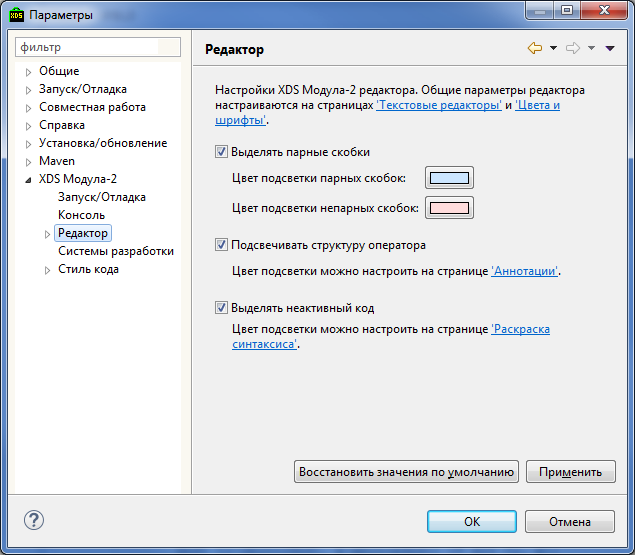
Отметив признак Выделять парные скобки, можно указать, какими цветами отмечать парные и непарные скобки (круглые, прямоугольные, треугольные или фигурные) в коде. Указываются соответственно цвета:
Признак Подсвечивать структуру оператора позволяет включать подсветку лексем, входящих в один оператор. Цвет подсветки указывается в Цвет подсветки структуры оператора.
Признак Выделять неактивный код включает выделение цветом тех участков кода, которые выключены из компиляции посредством использования соответствующих прагм компилятора. Настройка используемого для выделения цвета находится на странице Раскраска синтаксиса
Для изменения размера шрифта, используемого в текстовых редакторах, необходимо перейти на страницу Общие > Внешний вид > Цвета и шрифты, выбрать Простой > Шрифт текста и нажать кнопку Редактировать.
В разделе XDS Модула-2 > Редактор > Ориентиры отступов настраивается отображение ориентиров отступа.
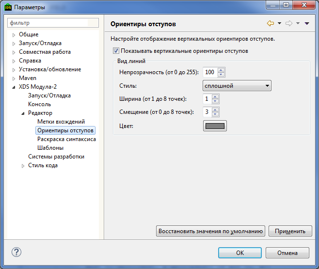
Ориентиры отступа имеют вид вертикальных линий показывающих структуру программного кода, как на рисунке:
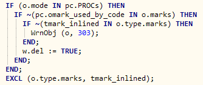
Показ ориентиров отступа может быть отключен признаком Показывать вертикальные ориентиры отступов.
Можно настроить следующие параметры их показа:
В разделе XDS Модула-2 > Редактор > Раскраска синтаксиса можно настроить цвета и эффекты, используемые для синтаксической раскраски Модула-2 кода.
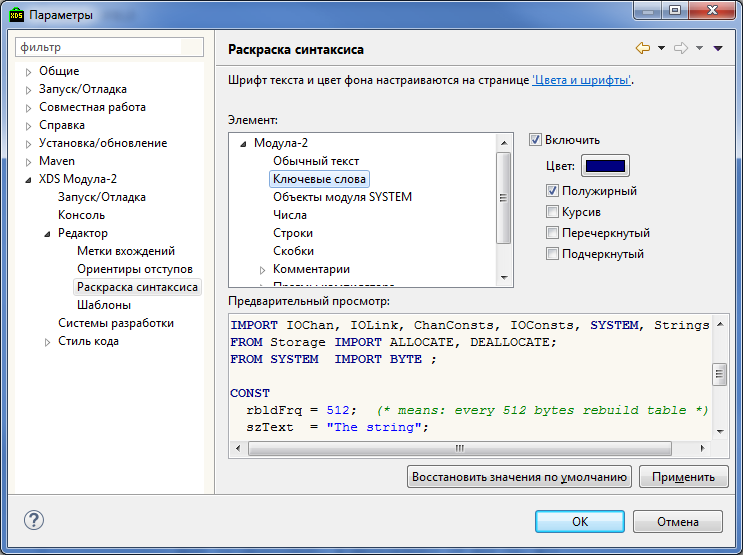
В окне Элемент выбирается, для какого именно типа задаётся раскраска, а справа от окна отмечается признак используемости раскраски Включить (если не отмечено, то заданная раскраска сохраняется в системе, но не используется) и задаются эффекты:
В окне Предварительный просмотр можно увидеть пример раскраски кода, соответственно заданным выше параметрам.
В разделе XDS Модула-2 > Редактор > Шаблоны можно настроить шаблоны синтаксических конструкций, из которых состоит Модула-2 код.
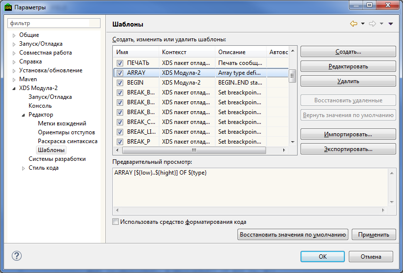
Добавить новую синтаксическую конструкцию можно, нажав кнопку Создать... в правой части диалога.
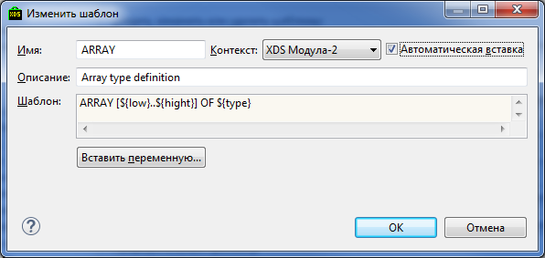
В открывшемся окне нужно заполнить следующие свойства:
При заполнении последнего поля можно использовать переменные, список которых открывается по кнопке Вставить переменную....
Синтаксическая конструкция добавляется в список нажатием кнопки OK.
Можно отредактировать свойства существующей синтаксической конструкции, выделив её в списке и нажав кнопку Редактировать, а также удалить конструкцию, нажав кнопку Удалить. Ошибочно удаленную синтаксическую конструкцию можно восстановить, нажав на кнопку Восстановаить удаленные. Кнопка Вернуть значения по умолчанию сбрасывает значения свойств текущей конструкции в значения, принятые по умолчанию.
Также синтаксическая конструкция может быть добавлена в список путем импорта из файла *.xml. Это делается нажатием кнопки Импортировать... справа от списка и последующим выбором файла. Экспортировать синтаксическую конструкцию в файл *.xml можно, выделив её в списке и нажав кнопку Экспортировать... справа от списка.
Если перед названием синтаксической конструкции снята отметка, то конструкция сохраняется в системе, но не используется.
В нижней части диалога можно отменить признак Использовать средство форматирования кода, означающий использование форматирования кода.
Рассмотрим подробнее, как можно изменить шаблон кода на примере шаблона IF-ELSE. Для начала редактирования, выберите шаблон IF-ELSE и нажмите Редактировать.
Откроется окно редактора шаблона:
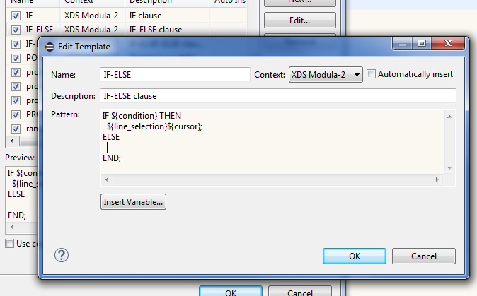
Шаблон автодополнения представляет собой текст со специальными переменными автодополнения. Оболочка заменяет их в момент вставки шаблона, либо такая переменная специальным образом модифицирует поведение редактора кода (что будет продемонстрировано на примере ниже).
Существует ряд встроенных переменных автодополнения (их список можно увидеть нажав кнопку Вставить переменную...): ${cursor}, ${date}, $$, ${line_selection}, ${time}, ${user}, ${word_selection}, ${year} .
Любая переменная автодополнения с именем не соответствующим встроенной, является локацией редактирования (подробнее - ниже). При вставке шаблона можно перемещаться между локациями редактирования клавишами Tab или Shift + Tab.
Рассмотрим переменную ${cursor}.
Отредактируйте шаблон IF-ELSE следующим образом:
IF ${condition} THEN
${line_selection}
ELSE
${cursor};
END;
Нажмите OK, Применить и закройте панель редактирования шаблонов.
Перейдите в редатор исходного кода для какого-нибудь mod-файла, перейдите в тело процедуры, начните набирать if и нажмите Ctrl + Пробел.
Появится следующее окно:

Курсор ввода находится в районе condition, так что если начать набирать, например, TRUE, condition будет заменено на TRUE.
Попробуйте также понажимать клавишу Tab - курсор будет прыгать между локациями редактирования, в данном примере это строки 17 и 20. Строка 20 как раз соответсвует локации редактирования переменной ${cursor}.
Уберите вставленный текст.
Теперь наберитите i := 0; и выделите этот текст:
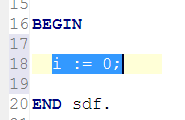
Нажмите Ctrl + Пробел и в появившемся списке вариантов автодополнений выберите IF-ELSE.
Будет вставлен следующий текст:
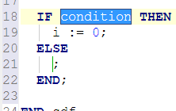
Таким образом, в качестве значения переменной ${line_selection} было взято текущее выделение редактора.
Отредактируйте поле condition и нажмите Enter. Курсор перейдет в локацию редактирования, соответствующую переменной ${cursor}. Эта переменная как раз указывает позицию, куда должен быть помещен курсор после завершения сессии автодополнения.
Отредактируйте теперь шаблон IF-ELSE следующим образом:
IF ${condition} THEN (* ${комментарий_для_THEN} *)
${line_selection}
ELSE (* ${комментарий_для_ELSE} *)
${cursor};
END; (* ${комментарий_для_END} *)
Перейдите в редактор исходного кода, и вызовите шаблон IF-ELSE:
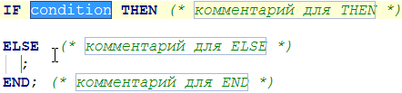
Ввиду того, что переменные ${комментарий_для_THEN}, ${комментарий_для_ELSE} и ${комментарий_для_END} не являются встроенными, они задают только локации редактирования. Во время сессии автодополнения, по ним можно перемещаться с помощью клавиш Tab и Shift + Tab.
Описание встроенных переменных шаблонов автодополнения:
В разделе XDS Модула-2 > Системы разработки можно зарегистрировать новые и настроить уже зарегистрированные КСП.
Подробнее о настройке КСП можно прочесть в разделе Управление параметрами КСП.
В данный момент раздел XDS Модула-2 > Стиль кода содержит только настройку форматирования.
В разделе XDS Модула-2 > Стиль кода > Форматирование можно изменять настройки автоматического форматирования текста.
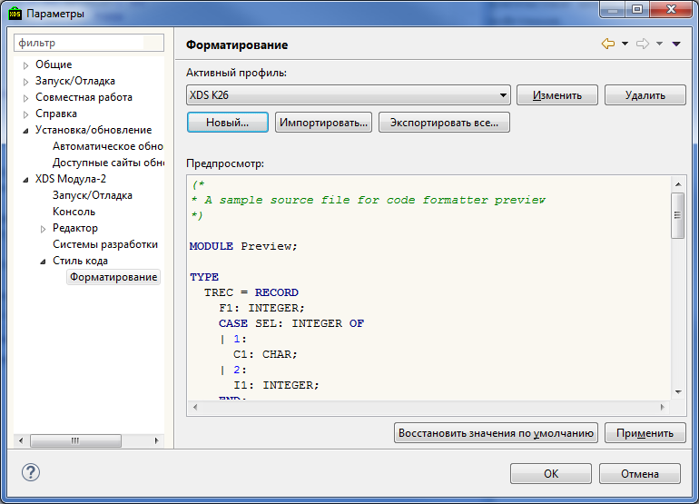
Все настройки форматирования сохраняются в профиле. Изначально тут установлен встроенный профиль - его настройки можно смотреть, но нельзя изменить. Вверху диалога Форматирование расположен список, в котором можно активизировать профиль из числа имеющихся, а так же кнопки:
Так же, внизу диалога находится окно Предпросмотр, в котором можно видеть как выглядит результат применения выбранного профиля к фрагменту программного текста.
Вверху диалога показывается имя редактируемого профиля, рядом с которым находится кнопка Экспорт... - с ее помощью данный профиль можно экспортировать в .xml файл.
Ниже - закладки, соответствующие страницам с различными группами настроек формаритования:
На каждой из закладок справа находится окно Предпросмотр, в котором можно видеть как выглядят результаты применения изменяемых настроек к фрагменту программного текста.

Здесь Общие настройки задают способ, которым будут форматироваться отступы в строках.
В разделе Отступ перечислены признаки того, в каких случаях следует формировать отступ и для некоторых признаков явно указывается размер отступа – для них равен не значению Размер отступа, а указанному тут. Доступны следующие признаки:
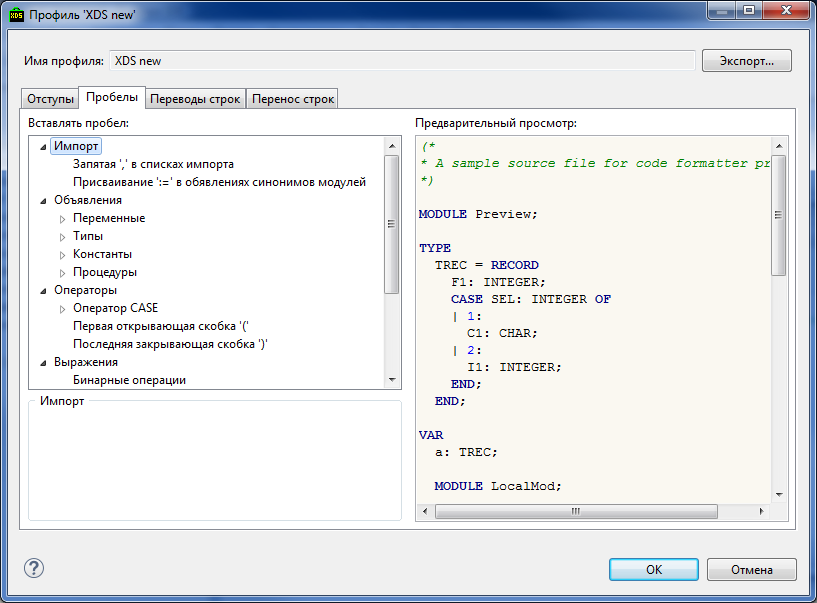
Здесь, в дереве выбора Вставлять пробел, можно выбирать различные синтаксические элементы языка. Когда элемент выбран, для него, под деревом, показываются признаки того, следует ли вставлять пробел перед ним или после него.
В случае, когда на границе двух элементов каждый из них может задавать признак вставки пробела, пробел будет вставляться всегда, когда хотя бы один из этих признаков установлен.

Здесь, в дереве выбора Вставка переводов строк, можно выбирать различные синтаксические элементы языка. Когда элемент выбран, для него, под деревом, показываются признаки того, следует ли вставлять перевод строки перед ним или после него.
В случае, когда на границе двух элементов каждый из них задает признак вставки перевода строки, он будет вставляться всегда, когда хотя бы один из этих признаков установлен.
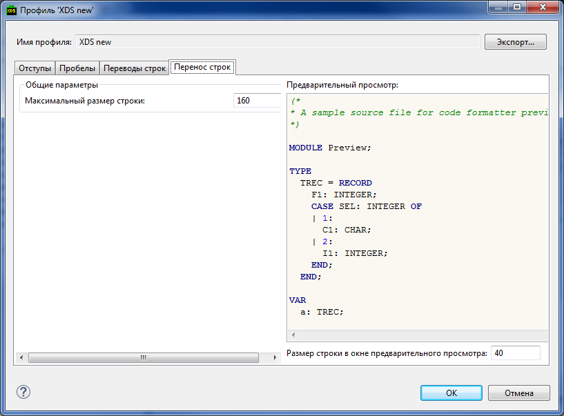
Под переносом строк понимается "сворачивание" слишком длинных строк путем вставки в них перевода строки и, если нужно, отступа перед текстом, перенесенным на новую строку.
Тут можно задать значение Максимальный размер строки – это позиция в строке, до которой форматтер постарается строки укоротить. Сделать это, не испортив синтаксиса прораммы, не всегда возможно, поэтому иногда строки могут остаться не свернутыми при достижении указанной границы.
Тут же, под окном предварительного просмотра, справа внизу, отдельно задается значение Размер строки в окне предварительного просмотра – это ширина, до которой текст будет свернут
в окне предварительного просмотра, меняя ее можно посмотреть как примерно будет выглядеть текст при сворачивании.
Общие установки среды Eclipse. XDS Modula-2 использует часть из них и, кроме того, добавляет в этот раздел некоторые свои настройки.
Параметры настройки проверки орфографии размещены в диалоге Параметры на странице Общие > Редакторы > Текстовые редакторы > Орфография.
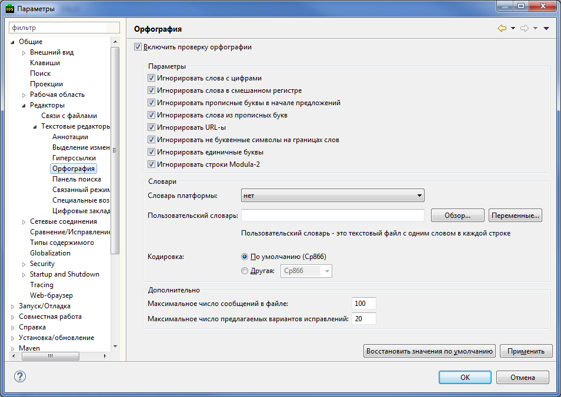
Вверху диалога расположен признак Включить проверку орфографии - он позволяет включать или полностью отключать проверку.
Под ним, если в среде одновременно установленно несколько различных служб проверки орфографии, может показываться список выбора, в котором можно выбрать одну из этих служб. Тут описываются настройки доступные при выборе XDS служба проверки орфографии.
Далее перечислены признаки, задающие параметры проверки:
В разделе Словари можно выбрать словарь из имеющихся в данный момент в среде Eclipse, или указать файл со словарем пользователя – в этом случае ожидается файл, на каждой строке которого стоит по одному слову. Кроме того, файл должен быть доступен не только на чтение, но и на запись. Указывая этот файл, тут же следует выбрать и соответствующую ему кодировку.
Кроме того, внизу диалога, можно задать ограничения максимального числа сообщений об ошибках в одном файле, и ограничение количества вариантов исправлений, предлагаемых пользователю.